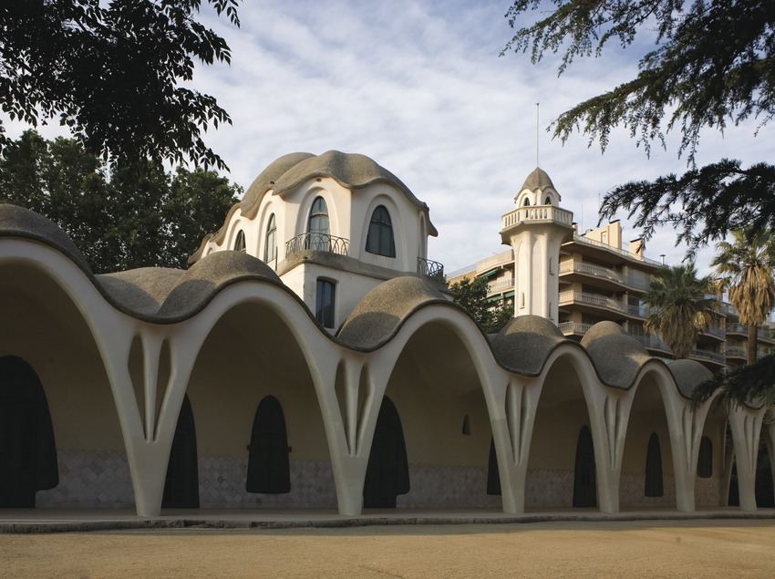
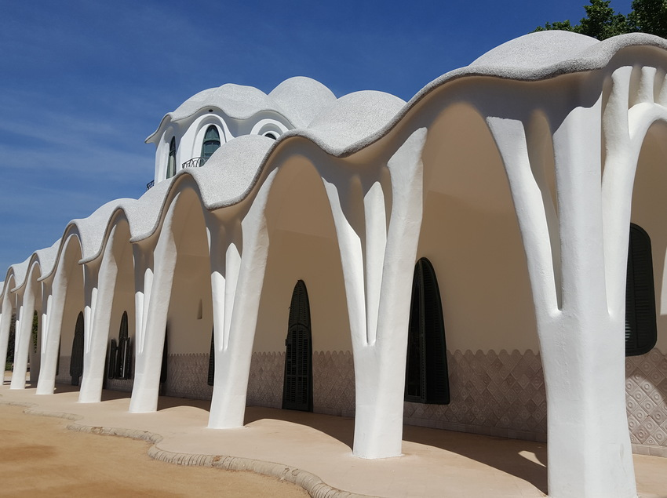
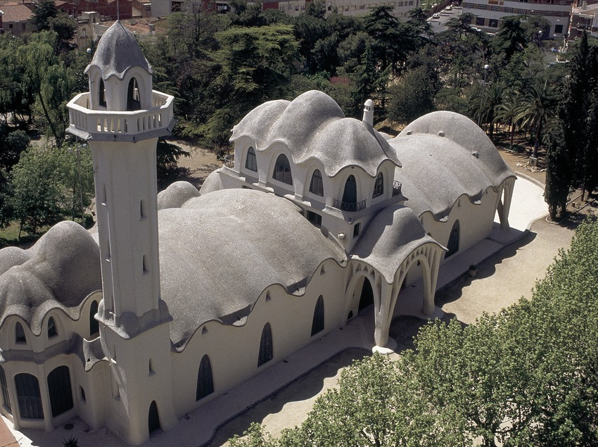

La Masia Freixa
Qué es?
Concebido el año 1896 como fábrica textil, este edificio fue construido entre 1907 y 1910 en la residencia familiar de Josep Freixa. Fue un proyecto del arquitecto Lluís Muncunill i Parellada. Se encuentra ubicada en el centro de Terrassa, en el Parc de Sant Jordi.

Eventos
La masia dispone de uno 100m2 para celebrar bodas o cumpleaños. Esta ubicada en medio de un parque, por lo que es el lugar ideal para cualquier tipo de evento.
Reservar Visitas
La masia se puede visitar de lunes a jueves con reserva previa. La visita dura unos 34 minutos aproximadamente y se realiza en catalán o castellano.
Reservar 